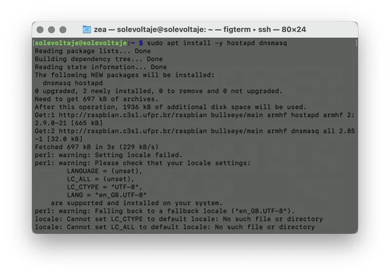
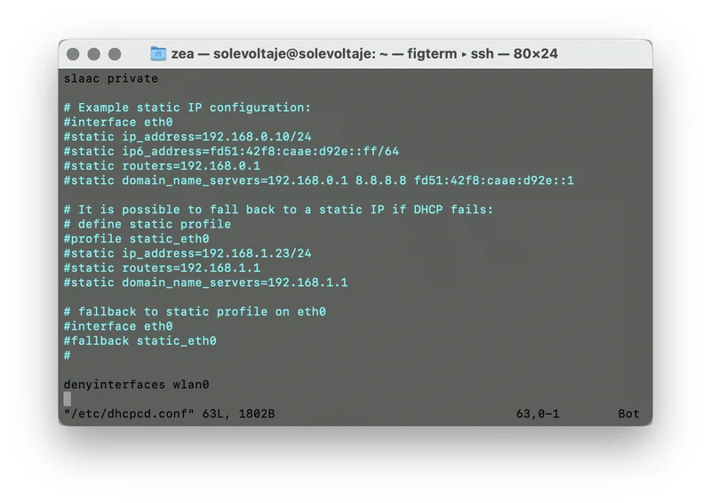
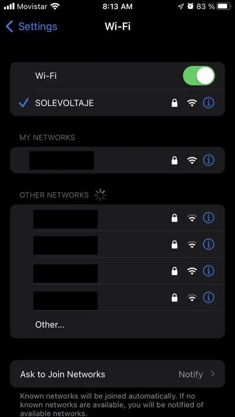
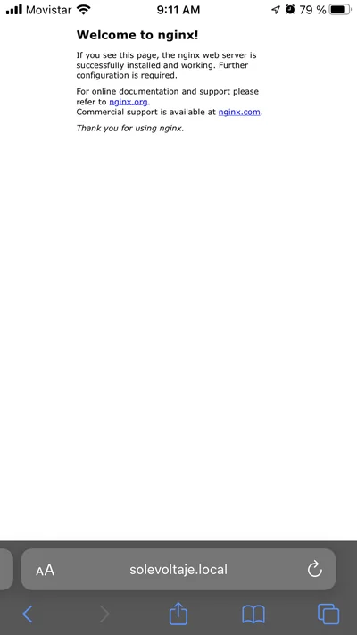
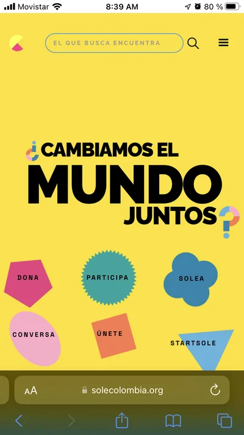

Configura tu Raspberry Pi
Comparte tu internet de bolsillo
Hola, soy Gabriel. Soy artista. Los aparatos digitales, su funcionamiento y la forma en la que los humanos interactuamos con ellos, me resultan interesantes. Me considero un cacharrero y te invito, si quieres, a que tú también lo seas.
Escribí la solución Raspberry Pi: Una pequeña Internet de bolsillo para que pudieras configurarla y, ahora, te acompaño para que puedas compartir la señal de tu dispositivo con otras personas o con otros dispositivos.
¿Qué es compartir el internet de tu RasperryPi?
Tener un computador del tamaño de una tarjeta de crédito, poder conectarlo a Internet y, además, poder compartir esa conexión con los demás computadores que tienes para hacer SOLE, es ¡abrirle las puertas a la mayor biblioteca del mundo!
Es convertir un espacio cualquiera en un Entorno de Aprendizaje Auto-Organizado donde abrirle las puertas a la creatividad de solucionar los retos, complejos o sencillos, de tu comunidad ¡INCREÍBLE! ¿No?
Para hacer SOLE sólo hay tres cosas fundamentales: personas, unos cuantos computadores con conexión a internet y Grandes Preguntas.
¿Para qué sirve?
Con esta receta podrás convertir tu Raspberry Pi en un Enrutador portátil, para que tu comunidad pueda conectarse de forma inalámbrica y acceder a la información allí alojada, y, si cuentas con una conexión a Internet cableada, podrás compartirla también.
¿Qué necesitas?
- Un Raspberry Pi
- Un computador
- Conexión a Internet - puedes revisar la solución ¿Cómo saber qué tipo de señal de Internet tienes? para asegurarte de qué tipo de conexión tienes, y si la tienes activa
- Mucha paciencia
¿Cómo hacerlo?
- Momento 1: Conéctate a tu Pi
- Antes que nada, asegúrate de tener un Raspberry Pi funcionando. Si necesitas ayuda para esto, revisa la receta Rasperry Pi: Una pequeña Internet de bolsillo donde te contamos cómo iniciar con este dispositivo.
- Una vez tengas tu sistema andando, conéctate a tu Rasperry Pi por medio de un Terminal iniciando una conexión SSH.
- Asegúrate de tener conexión a Internet para poder continuar con los siguientes pasos.
- Momento 2: Actualiza el sistema de tu Raspberry Pi

El primer paso, es realizar una actualización de todo el sistema, para asegurarnos que tenemos las últimas versiones de los programas que se ejecutan en nuestro Pi.
Para ello, basta con escribir en el terminal:
sudo apt update && sudo apt upgrade
El sistema nos avisará cuáles paquetes se deben actualizar. Para continuar con el proceso, debemos aceptar, escribiendo y y presionando la tecla enter
- Momento 3: Instala el software necesario

A continuación, debemos instalar dos programas en nuestro Pi:
sudo apt install -y hostapd dnsmasq
Este comando nos instalará hostapd que es una utilidad que nos permite usar el wireless de nuestro Pi como punto de acceso inalámbrico y dnsmasq que nos permitirá configurar un servidor DNS y de DHCP para permitir que usuarios se conecten al servidor y puedan tener las configuraciones necesarias de la red para acceder a ella.
- Momento 4: Configura una IP estática
- Deshabilitar la interfaz inalámbrica

En este paso configuraremos una dirección IP estática en la interfaz inalámbrica de nuestro PI. Es importante que no estés conectado de manera inalámbrica al Pi, porque durante los pasos siguientes la comunicación inalámbrica estará suspendida. Así que, asegúrate de estar conectado por medio de un cable, o tener una pantalla y teclado conectado directamente al Pi para continuar.
Las configuraciones de red en el Pi están siendo manejadas por el programa dhpcd, este se encarga de solicitar y asignar las direcciones IP necesarias para las interfaces de red disponibles. En este momento, tenemos que indicarle a este programa que ignore la interfaz inalámbrica. Para ello, hay que editar el archivo de configuración:
sudo nano /etc/dhcpcd.conf
… y al final de este, agregar esta línea:
denyinterfaces wlan0
Para salir y guardar los cambios presionamos ctrl + x seguido de y cuando nos pregunte.
- Asignar una IP estática

Ahora debemos asignar a la interfaz wlan0 una dirección IP estática en otro rango diferente al de nuestra red cableada. Vamos a editar el archivo:
sudo nano /etc/network/interfaces
No tengas miedo. Parece complejo, pero, si has llegado hasta aquí, ya falta poco para lograrlo. Agrega lo siguiente al final:
allow-hotplug wlan0
iface wlan0 inet static
address 192.168.10.1
netmask 255.255.255.0
network 192.168.10.0
broadcast 192.168.10.255
Lo que estamos haciendo es configurar esta interfaz para tener la IP 192.168.10.1
Para salir y guardar los cambios, presionamos ctrl + x seguido de y cuando nos pregunte.
- Momento 5: Configurar nuestro punto de acceso inalámbrico

Es el momento de indicarle a hostapd como operar. Vamos a indicarle que emita el nombre de la red SSID y que opere en un canal en específico. Estas configuraciones las pondremos en el archivo:
sudo nano /etc/hostapd/hostapd.conf
… en donde agregamos los siguientes datos:
interface=wlan0
driver=nl80211
ssid=SOLEVOLTAJE
hw_mode=g
channel=11
ieee80211n=1
wmm_enabled=1
ht_capab=[HT40][SHORT-GI-20][DSSS_CCK-40]
macaddr_acl=0
auth_algs=1
ignore_broadcast_ssid=0
wpa=2
wpa_key_mgmt=WPA-PSK
wpa_passphrase=LACONTRASENADEACCESO
rsn_pairwise=CCMP
Acá se pueden cambiar algunas cosas:
- El nombre de la red: esto lo configuramos en la línea
ssid=en nuestro ejemplo, la red se llamará SOLEVOLTAJE. - El canal:
channel=11está diciendo que vamos a operar en el canal 11, pero podemos cambiarlo por el que mejor funcione en nuestro lugar. - La contraseña de acceso: por seguridad, es necesario que asignemos una clave para conectarse a la red. Esto lo hacemos asignándola en la línea
wpa_passphrase=LACONTRASENADEACCESO.
Ahora debemos informarle a hostapd donde se encuentra la configuración. Esto lo hacemos editando el archivo:
sudo nano /etc/default/hostapd
… y agregando en el la siguiente línea:
DAEMON_CONF=
- Momento 6: Iniciar los servicios
Antes de reiniciar nuestro Pi, debemos habilitar los servicios para que se ejecuten siempre que lo encendamos.
Para ello, escribe lo siguiente en el terminal:
sudo systemctl unmask hostapd
sudo systemctl enable hostapd
sudo systemctl start hostapd
sudo systemctl unmask dnsmasq
sudo systemctl enable dnsmasq
sudo systemctl start dnsmasq
… y finalmente, reiniciamos el Pi para hacer nuestra primera prueba
sudo reboot now
- Momento 7: Haz una primera prueba

Desde otro computador o teléfono, busca en las redes inalámbricas la red que acabamos de crear, en nuestro caso SOLEVOLTAJE y conéctate a ella.
Si revisas las configuraciones de la red, deberías ver que la dirección IP asignada debe estar en el rango que seleccionamos en la configuración de dnsmasq. En nuestro caso, el dispositivo tiene asignada la IP 192.168.10.143

- Momento 8: Ya puedes compartir la conexión cableada

En este punto, quienes se conecten a nuestro punto de acceso podrán ver los archivos y servicios que tengamos configurados en nuestro Raspberry Pi. Si quieres compartir la conexión a Internet cableada por medio de la red inalámbrica continua con los siguientes pasos.
- Momento 9: Reenviar el tráfico hacia la conexión cableada

Es necesario que nuestro sistema reenvíe el tráfico de la interfaz inalámbrica hacia la cableada, para poder compartir la conexión. En este punto, tenemos que editar el archivo:
sudo nano /etc/sysctl.conf
En el contenido de este, buscamos la línea que dice #net.ipv4.ip_forward=1 y eliminamos el # al principio para indicar que queremos activar esta directriz. Una vez hagamos esta modificación, guardamos el archivo y continuamos con el siguiente paso.
- Momento 10: Finalmente, asegura el Firewall

Ya estamos en el último paso de la configuración. Acá tenemos que decirle al Firewall que permita el transito del tráfico de la red entre las interfaces inalámbricas y cableadas, para ello, entramos estos comandos en nuestro terminal:
sudo iptables -t nat -A POSTROUTING -o eth0 -j MASQUERADE
sudo iptables -A FORWARD -i eth0 -o wlan0 -m state --state RELATED,ESTABLISHED -j ACCEPT
sudo iptables -A FORWARD -i wlan0 -o eth0 -j ACCEPT
En este punto, ¡ya deberíamos tener internet en nuestros clientes inalámbricos! Sin embargo, hace falta que estos cambios no se pierdan cuando reiniciemos nuestro Pi. Para ello, vamos a guardar la configuración en un archivo de texto:
sudo sh -c
- Momento 11: Ahora, ¡con Internet!

Luego de este largo proceso, los clientes conectados a nuestro Pi podrán tener acceso a la conexión de Internet compartida desde nuestro Raspberry Pi… ¡CONSEGUIDO!
¿Te enredaste en alguno de los pasos? Cuéntanos cómo completar esta solución para que sea más clara.
¿Cómo saber si esta solución funciona?
Con esta receta, puedes configurar un Enrutador portátil, que sirve para llevar contenidos en tu Raspberry Pi y compartirlos con la comunidad, sin necesidad de tener una conexión constante a Internet.
Además, si tienes una conexión cableada, puedes compartirla para hacer que tus sesiones de SOLE sean más potentes.
¿Por qué podría funcionar esta solución?
Tener un enrutador portátil y de bajo consumo, nos permite llevar fácilmente nuestros contenidos a múltiples lugares donde la conexión a Internet no es constante.
Sin embargo, el número de clientes que puede soportar nuestro Pi es bajo. Si vas a conectar a más de 10 personas al mismo tiempo, tal vez la velocidad de la conexión se ponga un poco lenta y, para solucionarlo, debes buscar un enrutador más potente.
Si llegaste hasta acá, has aprendido un montón de cosas que puedes compartir con tu comunidad y, así, mejorar las condiciones de conectividad. Usar el Internet en grupo es una experiencia retadora, tanto en términos de tecnología, como en términos de comunidad. Hacer SOLE es una manera de usar el Internet en grupo para vivir mejor juntos.